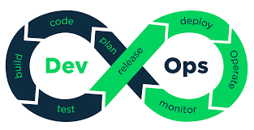

profissão devops
Em um mercado de TI cada vez mais atuante junto ao negócio, a realidade da TI Bimodal se faz cada vez mais presente, aliando padrões tradicionais a novos paradigmas. Gestores de TI interessados em otimizar a governança e em ampliar os resultados da área precisam estar atentos a essas inovações, e é relevante conhecer melhor o que é DevOps. Em essência, esse modelo aproxima o desenvolvimento da operação com o objetivo de simplificar processos, integrar áreas, alcançar maior qualidade nas entregas e reduzir o tempo de resposta ao cliente.
